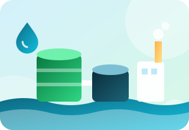
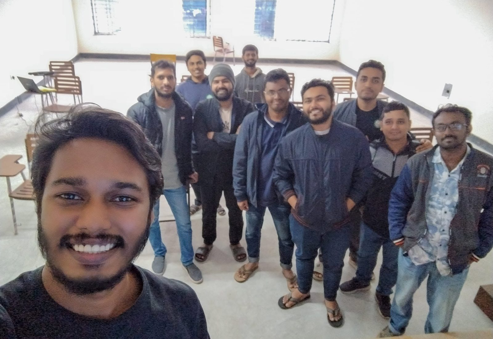

In progress
ETP design and IEE report, recycled paper factory, Sirajganj
Designing the effluent treatment plant and preparing the IEE report for a recycled paper factory.
What we are working on, and what we have completed. Client details are kept confidential.

Designing the effluent treatment plant and preparing the IEE report for a recycled paper factory.
Research and analysis support for a student's thesis at IWE, DUET, Gazipur.
Research and analysis support for an MSc student's thesis at IUBAT.

Four online and two on-campus batches, with about 30 to 50 learners in each.
Open a project to see what it involves. Have something similar? projects@bgrcbd.com
Send a short description of what you need. We reply within one working day, usually with questions and a rough plan.